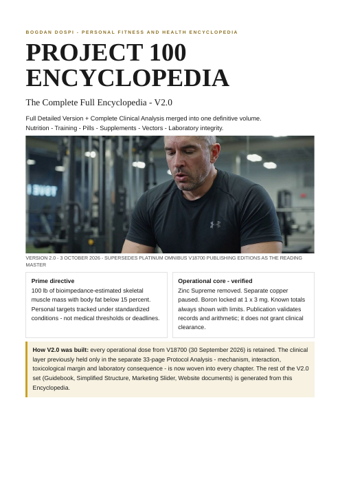
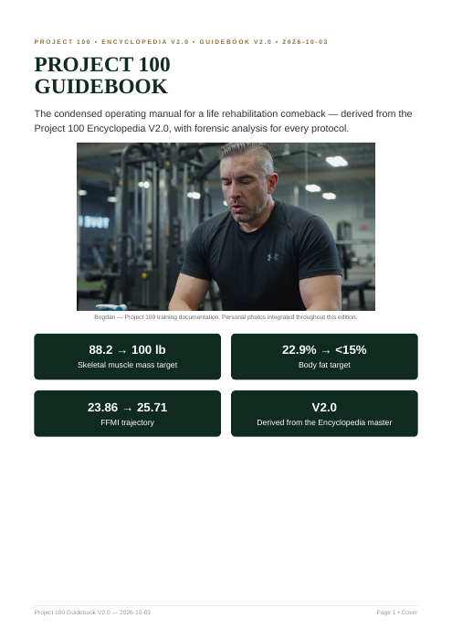
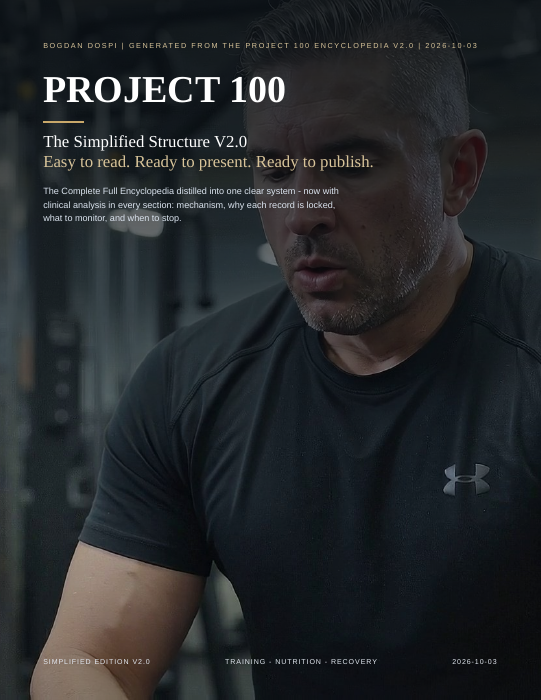
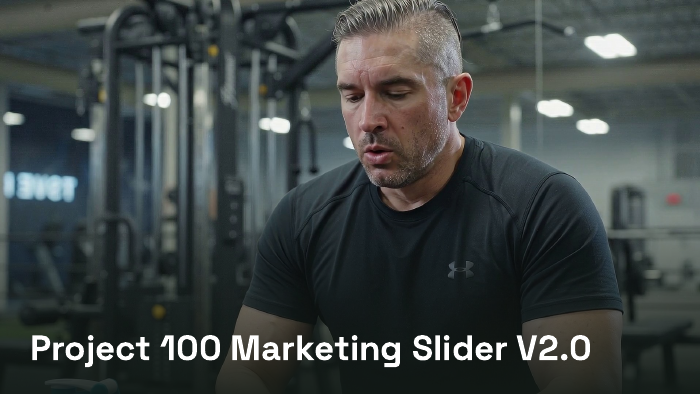
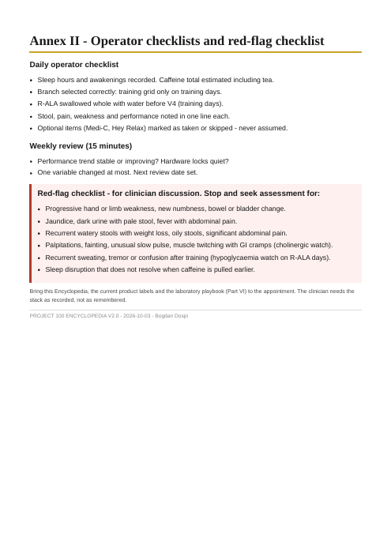

V2.0 · 2026-10-03 · LIVE
Encyclopedia V2.0
The single master volume: operational record and clinical analysis in one book.
PDF · 26 pages · 0.98 MB

PROJECT 100 · Published files · V2.0Download the Daily Guidebook, Simplified Structure, visual walkthrough and checklist. Direct downloads, no account required.

The single master volume: operational record and clinical analysis in one book.
PDF · 26 pages · 0.98 MB
The condensed daily manual, generated from the Encyclopedia.
PDF · 13 pages · 1.09 MB

Plain-language structure and source-linked operating records.
PDF · 22 pages · 1.47 MB

The visual walkthrough as a PDF deck, with the editable PowerPoint below.
PDF · 18 pages · 1.16 MB

Annex II extracted directly from the Encyclopedia: one printable source page.
PDF · 1 page · 0.05 MB
Everything on these pages is drawn from one book. The complete Project 100 Encyclopedia V2.0 is being converted into a standalone eBook for Amazon’s Kindle store. These on-site chapters stay free either way.
Follow @fudge_fit for release updates.
Who Bogdan is, the return, the baseline numbers, and the system on one screen.
Door 3 · DailyTraining or rest day, the clock, the vectors, and the fixes. Read or print the daily manual.
The 3 October book files remain dated publications. The live vector pages and descriptive PNG/SVG downloads include the V6 evening override added on 5 October.